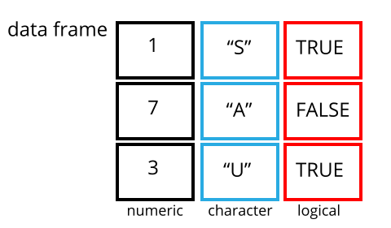
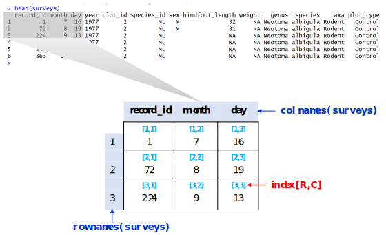

download.file(url="https://ndownloader.figshare.com/files/2292169",
destfile = "data/portal_data_joined.csv")3 Starting with data
3.1 Understanding data
To be able to do proper data analyses, it is crucial to understand your data before you can analyse it. So before we start doing any form of analyses we will first understand the dataset that we will be using throughout this course. Let us first download the file and have a look at the data.
We are going to use the R function download.file() to download the CSV file that contains the data. Run the code below in the R console:
Inside the download.file command, the first entry is a character string with the source URL. This source URL downloads a CSV file from figshare. The text after the comma (“data/portal_data_joined.csv”) is the destination of the file on your local machine.
If you go in the Files section in RStudio, click on the portal_data_joined.csv file in the data folder and then click View File you will be able to see the content of the file.
"record_id","month","day","year","plot_id","species_id","sex","hindfoot_length","weight","genus","species","taxa","plot_type"
1,7,16,1977,2,"NL","M","32","","Neotoma","albigula","Rodent","Control"
72,8,19,1977,2,"NL","M","31","","Neotoma","albigula","Rodent","Control" 224,9,13,1977,2,"NL","","","","Neotoma","albigula","Rodent","Control"From the first 4 lines of the portal_data_joined.csv file displayed above, we can notice that the file is in the comma separated value (CSV) format which is a very popular format where different values are separated by a comma. The first line of the file is the header of the file which provides a title for each column. In this dataset, we are studying the species repartition and weight of animals caught in plots in our study area. The dataset has the following columns, with each row holding information for a single animal:
| Column | Description |
|---|---|
| record_id | Unique id for the observation |
| month | month of observation |
| day | day of observation |
| year | year of observation |
| plot_id | ID of a particular plot |
| species_id | 2-letter code |
| sex | sex of animal (“M”, “F”) |
| hindfoot_length | length of the hindfoot in mm |
| weight | weight of the animal in grams |
| genus | genus of animal |
| species | species of animal |
| taxon | e.g. Rodent, Reptile, Bird, Rabbit |
| plot_type | type of plot |
3.2 Reading in data from a file
Now that we have looked at the raw format of the file (CSV format), let us load the data into R and look at how data is loaded into R. We will use read.csv() to load into memory the content of the CSV file as an object of class data.frame.
You are now ready to load the data:
surveys <- read.csv("data/portal_data_joined.csv")This statement doesn’t produce any output because, as you might recall, assignments don’t display anything. If we want to check that our data has been loaded, we can see the contents of the data frame by typing its name: surveys.
Wow… that was a lot of output. At least it means the data loaded properly. Let’s check the top (the first 6 lines) of this data frame using the function head():
head(surveys) record_id month day year plot_id species_id sex hindfoot_length weight
1 1 7 16 1977 2 NL M 32 NA
2 72 8 19 1977 2 NL M 31 NA
3 224 9 13 1977 2 NL NA NA
4 266 10 16 1977 2 NL NA NA
5 349 11 12 1977 2 NL NA NA
6 363 11 12 1977 2 NL NA NA
genus species taxa plot_type
1 Neotoma albigula Rodent Control
2 Neotoma albigula Rodent Control
3 Neotoma albigula Rodent Control
4 Neotoma albigula Rodent Control
5 Neotoma albigula Rodent Control
6 Neotoma albigula Rodent Control## Try also
View(surveys)
Note
read.csv assumes that fields are delineated by commas, however, in several countries, the comma is used as a decimal separator and the semicolon (;) is used as a field delineator. If you want to read in this type of files in R, you can use the read.csv2 function. It behaves exactly like read.csv but uses different parameters for the decimal and the field separators. If you are working with another format, they can be both specified by the user. Check out the help for read.csv() by typing ?read.csv to learn more. There is also the read.delim() for in tab separated data files. It is important to note that all of these functions are actually wrapper functions for the main read.table() function with different arguments. As such, the surveys data above could have also been loaded by using read.table() with the separation argument as ,. The code is as follows: surveys <- read.table(file="data/portal_data_joined.csv", sep=",", header=TRUE). The header argument has to be set to TRUE to be able to read the headers as by default read.table() has the header argument set to FALSE.
3.3 Data frames
Data frames are another data structure in R which is most widely used in the R programming world. It is very popular as most of the data is readily available in tabular form and it is the also the data structure used when plotting and performing most analyses in R.
A data frame is the representation of data in the format of a table where the columns are vectors that all have the same length. Because columns are vectors, each column must contain a single type of data (e.g., characters, integers, logical). For example, here is a figure depicting a data frame comprising a numeric, a character, and a logical vector.

In R we can see this by inspecting the structure of a data frame with the function str():
str(surveys)'data.frame': 34786 obs. of 13 variables:
$ record_id : int 1 72 224 266 349 363 435 506 588 661 ...
$ month : int 7 8 9 10 11 11 12 1 2 3 ...
$ day : int 16 19 13 16 12 12 10 8 18 11 ...
$ year : int 1977 1977 1977 1977 1977 1977 1977 1978 1978 1978 ...
$ plot_id : int 2 2 2 2 2 2 2 2 2 2 ...
$ species_id : chr "NL" "NL" "NL" "NL" ...
$ sex : chr "M" "M" "" "" ...
$ hindfoot_length: int 32 31 NA NA NA NA NA NA NA NA ...
$ weight : int NA NA NA NA NA NA NA NA 218 NA ...
$ genus : chr "Neotoma" "Neotoma" "Neotoma" "Neotoma" ...
$ species : chr "albigula" "albigula" "albigula" "albigula" ...
$ taxa : chr "Rodent" "Rodent" "Rodent" "Rodent" ...
$ plot_type : chr "Control" "Control" "Control" "Control" ...3.3.1 Inspecting data.frame Objects
As we mentioned before, it is important to understand your data before analysing it. Furthermore we want to make sure that the data has loaded in R properly. To do that, there are several functions we can use that help us to inspect our data.frame object.
We already saw how the functions head(), view() and str() can be useful to check the content and the structure of a data frame. Here is a non-exhaustive list of functions to get a sense of the content/structure of the data. Let’s try them out!
- Size:
dim(surveys)- returns a vector with the number of rows in the first element, and the number of columns as the second element (the dimensions of the object)nrow(surveys)- returns the number of rowsncol(surveys)- returns the number of columns
- Content:
head(surveys)- shows the first 6 rowstail(surveys)- shows the last 6 rows
- Names:
names(surveys)- returns the column names (synonym ofcolnames()fordata.frameobjects)rownames(surveys)- returns the row names
- Summary:
str(surveys)- structure of the object and information about the class, length and c content of each columnsummary(surveys)- summary statistics for each column
Note
Most of these functions are “generic”, they can be used on other types of objects besides data.frame.
3.3.2 Indexing and subsetting data frames
3.3.2.1 Numeric indexing
You can think of a data frame as a table with rows and columns. Each element in the data frame can be indexed by the position of the row and the column in respect to the whole data frame. The index is specified as [R,C] where R is the position of the row (or row number) and C is the position of the column (or column number). Note that [] are used for indexing, while () are used to call a function. Indexing in a data frame starts from 1. To be able to extract specific data from the surveys data frame, we need to specify the indices or positions of the elements we want from it. In the image below we zoom into the first three columns and rows of the surveys data frame and show their indexes displayed on top of their values in skyblue.

The illustration above illustrates how numeric indexing works. Below are some examples of how we can retrieve subset of values from the surveys data frame using numeric indexing.
# get first element in the first column of the data frame
surveys[1, 1]
# get first element in the 6th column
surveys[1, 6]
# get first column of the data frame (as a vector)
surveys[, 1]
# get first three elements in the 7th column (as a vector)
surveys[1:3, 7]
# get the 3rd row of the data frame (as a data.frame)
surveys[3, ]
# equivalent to head_surveys <- head(surveys)
head_surveys <- surveys[1:6, ] : is an operator in R that creates a sequence of numeric vectors of integers in increasing or decreasing order, test 1:10 and 10:1 for instance. It is equivalent to the function seq(from, to).
You can also exclude certain indices of a data frame using the “-” sign:
# get the whole data frame, except the first column
surveys[, -1]
# equivalent to head(surveys)
surveys[-c(7:34786), ] 3.3.2.2 Name indexing
Data frames can be subset by calling indices (as shown previously), but also by calling their row names and column names directly. This is known as name indexing. Below are some example of how we retrieve data from a data frame using column names.
# get species_id column as a vector
surveys[, "species_id"]
# same as above
surveys$species_id
# get the record_id and species columns for the first three rows
# Note: we are mixing numeric and name indexing here
surveys[1:3, c("record_id", "species")] In RStudio, you can use the autocompletion feature to get the full and correct names of the columns.
3.3.2.3 Logical indexing
Another way to retrieve data from a data frame is by logical indexing, or in other words, by performing a logical operation on a data frame.
# get all the records that have species as "albigula"
surveys[surveys$species == "albigula",]
# save all the records that have species as "albigula" into a variable
albigula_data <- surveys[surveys$species == "albigula",]
# how many records have species as "albigula" in the surveys data frame?
nrow(albigula_data)In case you are wondering what a Neotoma albigula is: 
3.4 Factors
When we did str(surveys) we saw that several of the columns consist of integers. The columns genus, species, sex, plot_type, … however, are of the class character. Arguably, these columns contain categorical data, that is, they can only take on a limited number of values.
R has a special class for working with categorical data, called factor. Factors are very useful and actually contribute to making R particularly well suited to working with data. So we are going to spend a little time introducing them.
Once created, factors can only contain a pre-defined set of values, known as levels. Factors are stored as integers associated with labels and they can be ordered or unordered. While factors look (and often behave) like character vectors, they are actually treated as integer vectors by R. So you need to be very careful when treating them as strings.
We can convert these columns that contain categorical data to type factor by using the factor() function:
surveys$sex <- factor(surveys$sex)We can see that the conversion has worked by using the summary() function again. This produces a table with the counts for each factor level:
summary(surveys$sex) F M
1748 15690 17348 By default, R always sorts levels in alphabetical order. For instance, if you have a factor with 2 levels:
sex <- factor(c("male", "female", "female", "male"))R will assign 1 to the level "female" and 2 to the level "male" (because f comes before m, even though the first element in this vector is "male"). You can see this by using the function levels() and you can find the number of levels using nlevels():
levels(sex)[1] "female" "male" nlevels(sex)[1] 2Sometimes, the order of the factors does not matter, other times you might want to specify the order because it is meaningful (e.g., “low”, “medium”, “high”), it improves your visualization, or it is required by a particular type of analysis. Here, one way to reorder our levels in the sex vector would be:
sex # current order[1] male female female male
Levels: female malesex <- factor(sex, levels = c("male", "female"))
sex # after re-ordering[1] male female female male
Levels: male femaleIn R’s memory, these factors are represented by integers (1, 2, 3), but are more informative than integers because factors are self describing: "female", "male" is more descriptive than 1, 2. Which one is “male”? You wouldn’t be able to tell just from the integer data. Factors, on the other hand, have this information built in. It is particularly helpful when there are many levels (like the species names in our example dataset).
3.4.1 Converting factors
If you need to convert a factor to a character vector, you use as.character(x).
as.character(sex)[1] "male" "female" "female" "male" In some cases, you may have to convert factors where the levels appear as numbers (such as concentration levels or years) to a numeric vector. For instance, in one part of your analysis the years might need to be encoded as factors (e.g., comparing average weights across years) but in another part of your analysis they may need to be stored as numeric values (e.g., doing math operations on the years). This conversion from factor to numeric is a little trickier. The as.numeric() function returns the index values of the factor, not its levels, so it will result in an entirely new (and unwanted in this case) set of numbers. One method to avoid this is to convert factors to characters, and then to numbers.
Another method is to use the levels() function. Compare:
year_fct <- factor(c(1990, 1983, 1977, 1998, 1990))
as.numeric(year_fct) # Wrong! And there is no warning...[1] 3 2 1 4 3as.numeric(as.character(year_fct)) # Works...[1] 1990 1983 1977 1998 1990as.numeric(levels(year_fct))[year_fct] # The recommended way.[1] 1990 1983 1977 1998 1990Notice that in the levels() approach, three important steps occur:
- We obtain all the factor levels using
levels(year_fct) - We convert these levels to numeric values using
as.numeric(levels(year_fct)) - We then access these numeric values using the underlying integers of the vector
year_fctinside the square brackets